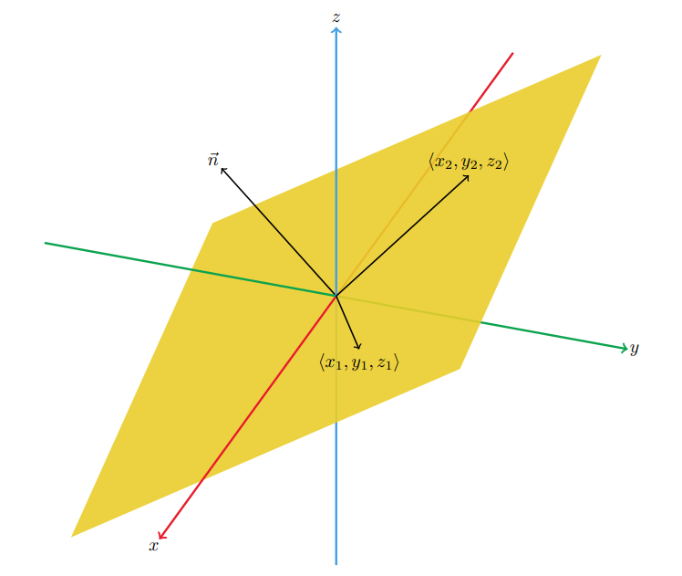

Table of Contents
Miscellaneous Topics

NARROW DISPLAY WARNING
You are most likely using a tablet or mobile device in portrait orientation. This website is best viewed using a typical computer screen with the browser window maximized.
Viewing this website in portrait orientation can cause problems with equations being longer than the screen width (you can scroll to the right), images being poorly sized, and the font size of maths text being much smaller than regular text. If your only option is a tablet or mobile device, your viewing experience will be better if you view this website in landscape orientation. You might need to refresh the page to fix any problems after rotating.
A quick way to create a vector perpendicular to a plane is to write the equation of the plane as a dot product of the coefficients on x, y, and z with vector [x,y,z] equal to a constant. The vector of coefficients is perpendicular to the plane, called a normal vector to the plane.
One way to create a normal vector to this plane is to use the properties of the dot product.
\begin{equation} x - 2y + 3z = 0 \qquad \langle 1,-2,3 \rangle \cdot \langle x,y,z \rangle = 0 \end{equation}Since the RHS of this plane equation is 0 for this example, points that solve the equation of the plane are also vectors that lie in the plane because $\langle 0,0,0 \rangle$ is a solution to this plane equation. The tail of a vector starts at the origin and the head of a vector ends at a point in the plane. So if $(x_{1},y_{1},z_{1})$ and $(x_{2},y_{2},z_{2})$ solve the plane equation, meaning they are points in the plane, then the $\langle x_{1},y_{1},z_{1} \rangle$ and $\langle x_{2},y_{2},z_{2} \rangle$ vectors lie in the plane.
This means that the coefficients vector is orthogonal to the plane since the dot product is zero,
\begin{equation} \langle 1,-2,3 \rangle \cdot \langle x_{1},y_{1},z_{1} \rangle = 0 \qquad \langle 1,-2,3 \rangle \cdot \langle x_{2},y_{2},z_{2} \rangle = 0 \end{equation}So a normal vector the this plane is simply,
\begin{equation} \vec{n} = \langle 1,-2,3 \rangle \end{equation}For a plane with equation,
\begin{equation} ax + by + cz = d \end{equation}We can use the coefficients as in the above example for when $d=0$ to get the normal vector for this plane equation. This works because no matter what the constant $d$ is on the RHS, all the planes are parallel to each other for every value of $d$. Changing $d$ translates the plane but does not rotate it. To rotate the plane, you would have to change the coefficients $a,b,c$.
Then we can apply the same logic as the above example for when $d=0$ to get the normal vector for this plane equation.
\begin{equation} \vec{n} = \langle a,b,c \rangle \end{equation}